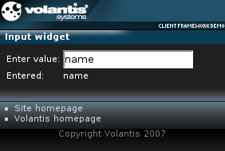

It is a general purpose element, used by widgets which need a text input control which is not associated with a form.

<widget:input id="entry"/>
<?xml version="1.0" encoding="UTF-8"?>
<html xmlns="http://www.w3.org/2002/06/xhtml2"
xmlns:mcs="http://www.volantis.com/xmlns/2006/01/xdime/mcs"
xmlns:template="http://www.volantis.com/xmlns/marlin-template"
xmlns:widget="http://www.volantis.com/xmlns/2006/05/widget">
<head>
<title>Input widget</title>
<link rel="mcs:theme" href="/themes/main.mthm"/>
<link rel="mcs:layout" href="/layouts/main.mlyt"/>
</head>
<body>
<template:apply href="templates/demo-main.xdtpl">
<template:binding name="title" value="Select widget"/>
<template:binding name="content">
<template:complexValue>
<div style="mcs-layout: 'layouts/2x2.mlyt'">
<span style="mcs-container: 'top-left'">Enter value:</span>
<widget:input style="mcs-container: 'top-right'" id="entry"/>
<span style="mcs-container: 'bottom-left'">Entered:</span>
<widget:display style="mcs-container: 'bottom-right'"
property="entry#value"/>
</div>
</template:complexValue>
</template:binding>
</template:apply>
</body>
</html>
| Name | Purpose |
|---|---|
| div | A section used to add extra structure to documents. Style sheets can be used to control the presentation. |
| span | Inline element used to set a style. |
| widget:display | An inline widget element used to display some text content. It may be associated with a widget property. In such cases, the displayed content represents the value of the selected property. |
| widget:input | A general purpose element, used by widgets which need a text input control which is not associated with a form. |
| Core attributes | Attributes that are common to XDIME 2 elements. |